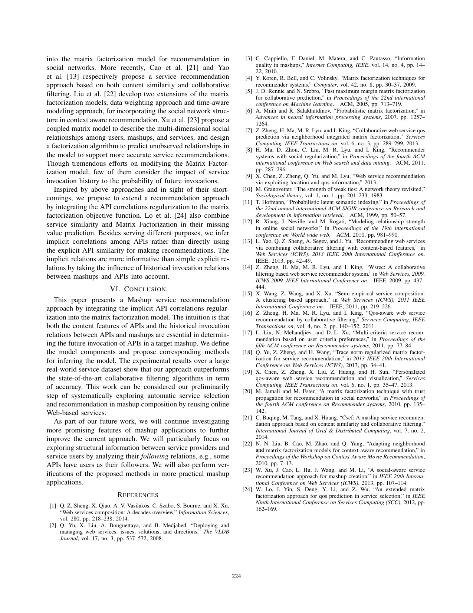

Problem
解决的问题
这篇论文属于“鲁棒数据分析”方向，核心关注 Service Recommendation, Data Analytics, Robust Learning, Data Quality。它要解决的不是单纯提升一个指标，而是在 ICWS 场景下，让模型、数据或感知系统面对真实扰动和任务约束时仍然可用、可评估、可解释。处理推荐系统中隐式相关、序列依赖和用户行为稀疏问题。
Robust Data Analytics · 2015 · ICWS
Service Recommendation for Mashup Composition with Implicit Correlation Regularization
Problem
这篇论文属于“鲁棒数据分析”方向，核心关注 Service Recommendation, Data Analytics, Robust Learning, Data Quality。它要解决的不是单纯提升一个指标，而是在 ICWS 场景下，让模型、数据或感知系统面对真实扰动和任务约束时仍然可用、可评估、可解释。处理推荐系统中隐式相关、序列依赖和用户行为稀疏问题。
Value
用于展示时，这篇论文可以放在“问题定义 - 方法设计 - 证据评估”的链条中理解。它的价值在于把 Service Recommendation 具体化为一个可实验验证的研究问题，并通过 IEEE International Conference on Web Services (ICWS)（CCF B, CORE A） 的发表形态呈现该方向的代表性进展。
Extracted Figure Page
该页从原文 PDF 第 8 页截取，通常包含方法框图、系统流程、算法说明或实验设置。展示时可先用它建立视觉锚点，再结合下方中文说明讲清研究问题与技术贡献。
打开原文第 8 页
Technical Route
Innovation